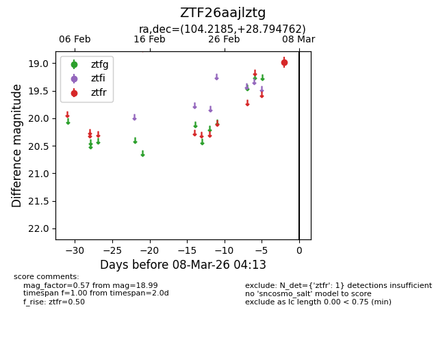
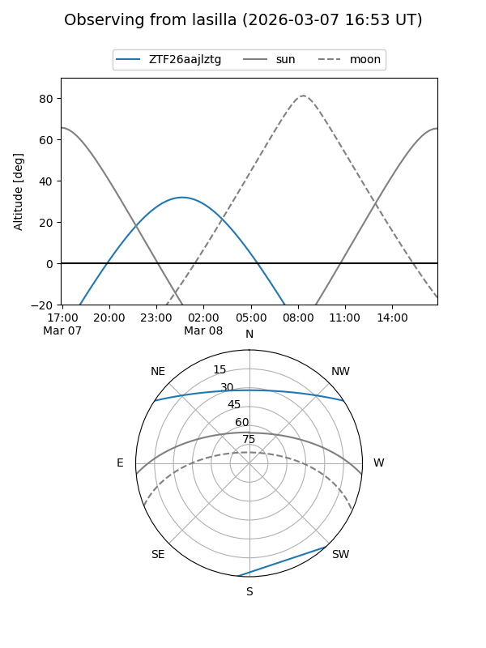
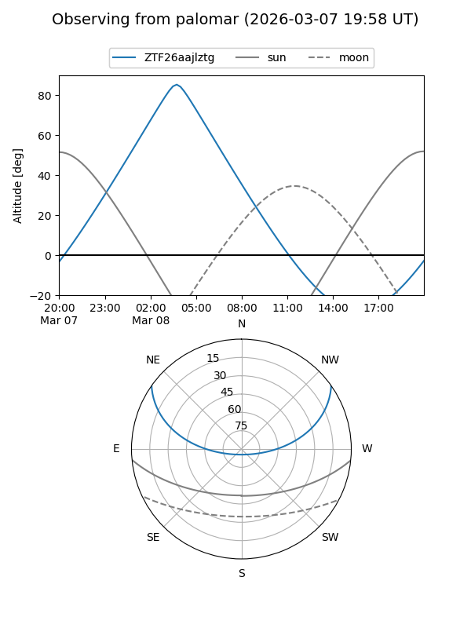

ZTF26aajlztg
Target ZTF26aajlztg at 2026-03-08 04:14
Aliases and brokers:
FINK: link
Lasair: link
ALeRCE: link
alt names
ZTF26aajlztg (ztf,fink_ztf)
Coordinates:
equatorial (ra, dec) = 104.2185,+28.79476
equatorial (HMS+DMS) = 06:56:52.45,+28:47:41.14
galactic (l, b) = (187.3613,+13.77642)
Flags:
Photometry:
last ztfr=18.99
1 ztfr detections
Lightcurve

Visibility


Additional plots